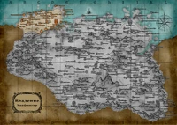

Белый Берег — это пустынная местность, занятая обширными ледяными и снежными пространствами. Её пределы простираются от центра Скайрима вплоть до северного побережья. Там, в столичном городе Данстар, расположен один из самых оживлённых портов провинции
Центральное владение отличается обширными зелёными лугами, на которых расположены многочисленные фермы. Через Вайтран проходит немало дорог, соединяющих между собой удалённые владения
Это промозглое, занесённое снегами владение на северо-восточной окраине Скайрима совершенно не приспособлено для жизни. Не исключено, что маги Коллегии Винтерхолда избрали для себя это место, рассчитывая на относительное уединение
Истмарк расположен у восточных границ Скайрима и соседствует с Морровиндом. Ярл Ульфрик Буревестник правит из древнего города Виндхельм. Он со своими сторонниками представляет главную вашу угрозу
Занимающий западные границы Скайрима Предел почти весь покрыт крутыми скалистыми горами. Мало что произрастает в этом недружелюбном краю, однако его столица, Маркарт, являет собой практически неприступную каменную крепость, которая в ходе войны могла бы стать идеальной оборонительной позицией для любой из сторон
Это владение расположено на юго-восточной окраине Скайрима, и, как и в Пределе на западе, здесь господствуют высокие горные вершины. Климат в Рифте мягче, чем в северных владениях, и растительности здесь больше, поэтому фермерское хозяйство процветает
Одно из так называемых «малых» владений Скайрима, расположенное в глубине его территории вдали от моря и занимающее обширные пространства на юго-западе провинции. Здесь покрытые густыми лесами равнины граничат с горными массивами разной величины: от одиночных гор до целых хребтов и нагорий.
Солитьюд, город верховных королей Скайрима и столица владения Хаафингар, всегда встречал Империю с неизменным радушием. Немало торговых путей сходится сюда по рекам, и вряд ли в Скайриме найдётся более гостеприимный народ, чем в этом владении
Владение делится поровну на открытую всем ветрам тундру с разбросанными по ней фермами и большой зловонный солончак. Здесь мало интересного, разве что столица владения — Морфал. Пока что ярл Идгрод Чёрная содействовала Империи, но если создастся сложная ситуация, то она будет исходить лишь из собственных интересов